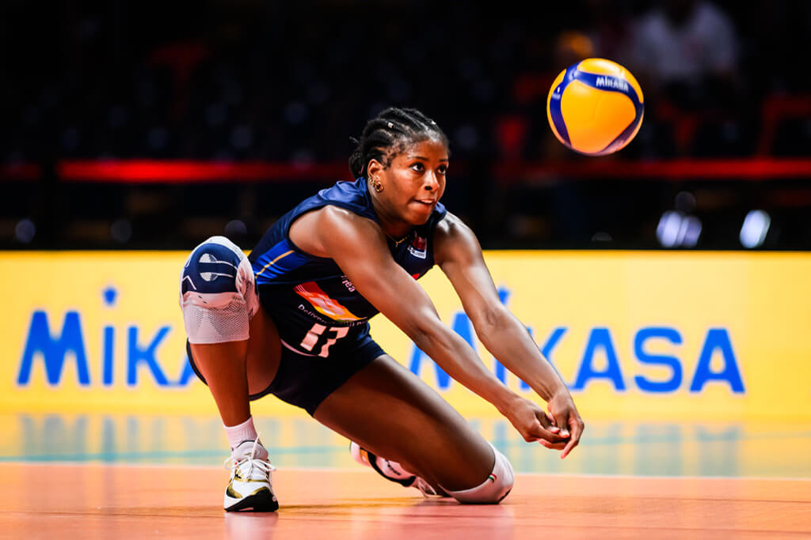
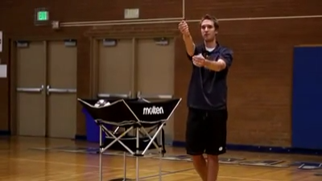
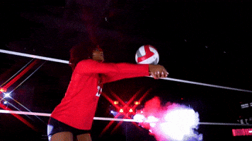
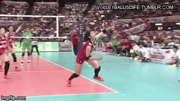
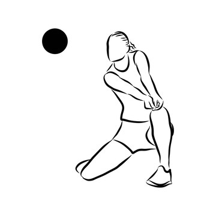
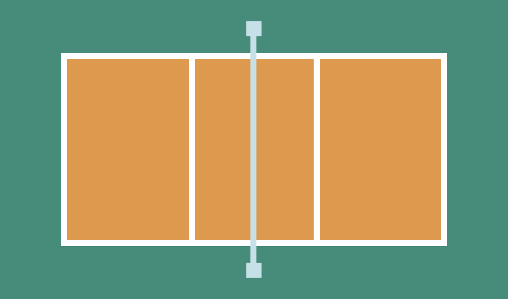
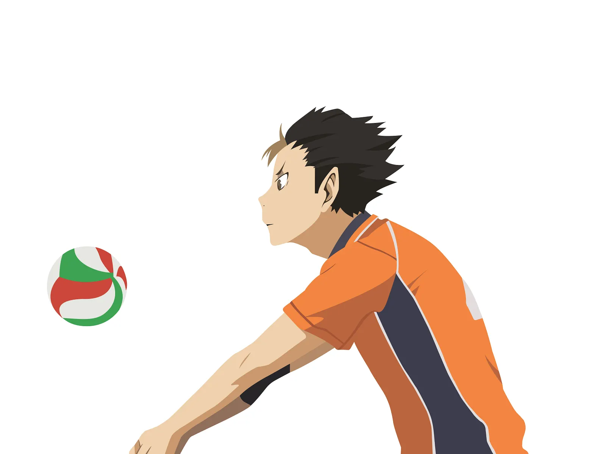
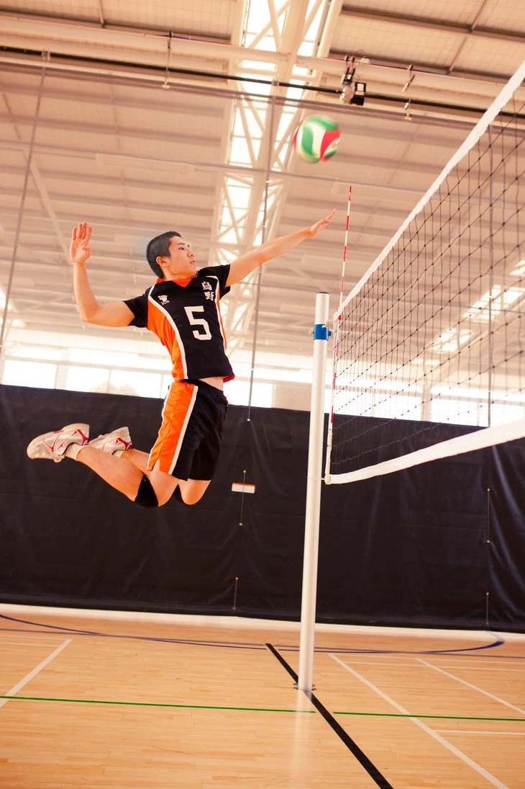
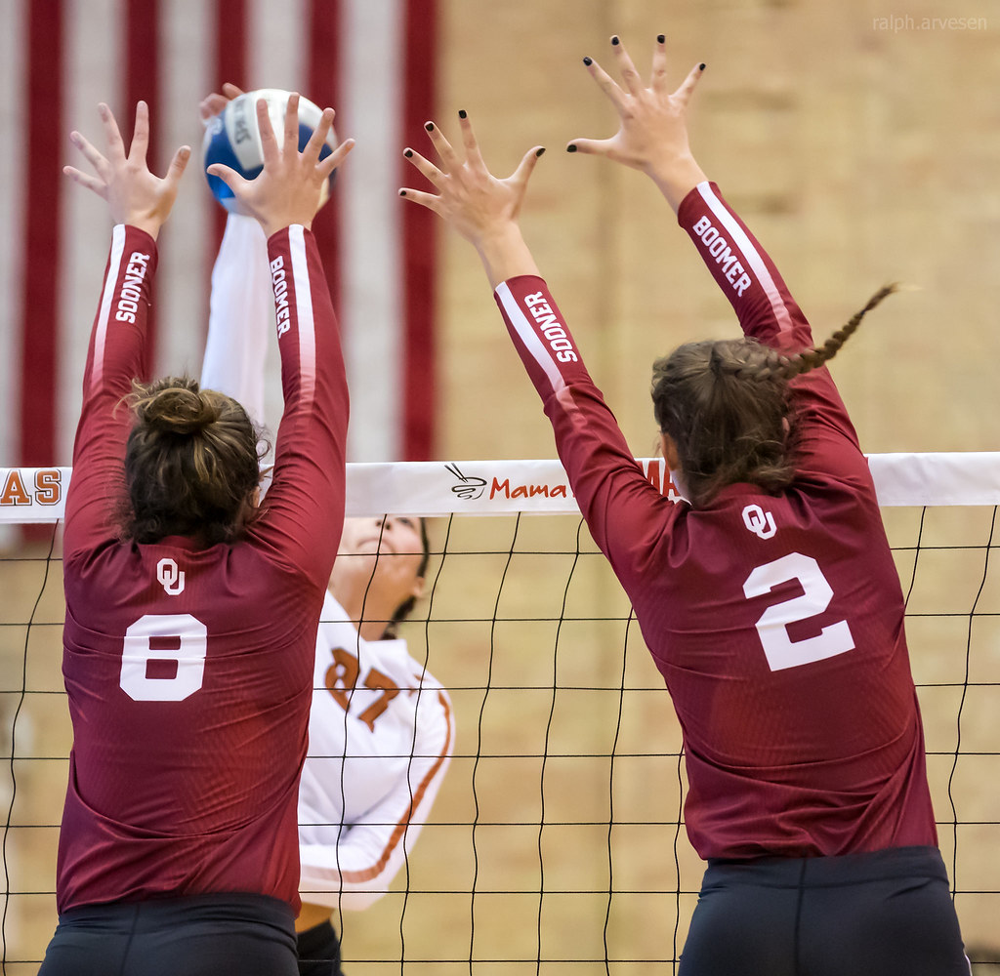

"You're either getting better or getting worse. I don't think you stay
the same in sports. If we want to achieve something special in the game,
then those players have to recognize that they're responsible every day
for getting better."
-Russ Rose
What is Volleyball?
Volleyball is a team sport where two teams divided by a net compete to try to score points by hitting a ball over the net to make it land on the other team's side of the court. Each team typically has 6 players on the court at once. There are different versions available for specific circumstances in order to offer the versatility of the game to everyone.
A team can touch a volleyball a maximum of three times before it must go over the net. The usual sequence is the dig where a person bumps the ball to pass it, a set, the setter passes to someone able to spike and then the spike where a person slams the ball over the net onto the opponents side of the court.

Skills and Techniques
Serving
Serving is the act of putting the ball into play. There are
various types of serves, including underhand, overhand, and jump
serves.
To serve the ball, you go behind the out of bounds line and hit
the ball with your hand to send it over the net.
Bumping
Bumping (also known as forearm pass) is used to pass the ball to a teammate. Its typically the first touch. It involves using the forearms to create a platform for the ball to bounce off of. There are many ways to bump a ball but its important that you use both arms most of the time to maintain accuracy and strength.
Setting
Setting is the act of preparing the ball for an attack. The setter
touches the ball after the bump and before the spike, aiming to
deliver a precise ball to the spiker.
To set a ball, position yourself under the volleyball, create a
triangle with your hands and use your legs to push upwards.
Blocking
Blocking is a defensive skill that people in the front row use to
prevent the ball from going over the net.
To block effectively, you must time your jump to meet the ball at
its highest point and use your hands to create a solid barrier.
Spiking
Spiking is the act of attacking the ball with force, aiming to
score points by slamming the ball down into the opponent's court.
A successful spike requires timing, power, and precision.
To spike a ball, approach the net with speed, jump off both feet,
and swing your arm to hit the ball at its highest point.





The Core Rules
The Three-Hit Limit

When the ball comes to your side, you can only hit the ball 3 times to get it over the net. You cannot hit the ball 2 times in a row.
Boundaries

- The server must serve from behind the end line.
- You can't touch the volleyball net.
- The ball must land within the opponent's court boundaries.
Scoring
- A point is scored when the ball lands on the opponent's court or it goes out of bounds.
- Matches are typically played to 25 points, and a team must win by 2 points.
- In volleyball, the team winning a rally scores a point. When the receiving team wins a rally, it gains a point and the right to serve, and its players rotate one position clockwise.
Key Positions
Setter
The "control tower" who touches the ball more than anyone else and sets up attacks. They usually get the second touch.
Libero
The great receiver specialist who typically gets the ball first and plays a key role in saving.

Spiker
The primary attacker who aims to score points by slamming the ball over the net. They typically attack last from the front row.

Middle Blocker
The player who specializes in blocking the opponent's attacks at the net. This person is usually tall and has good timing to jump and intercept the ball.
